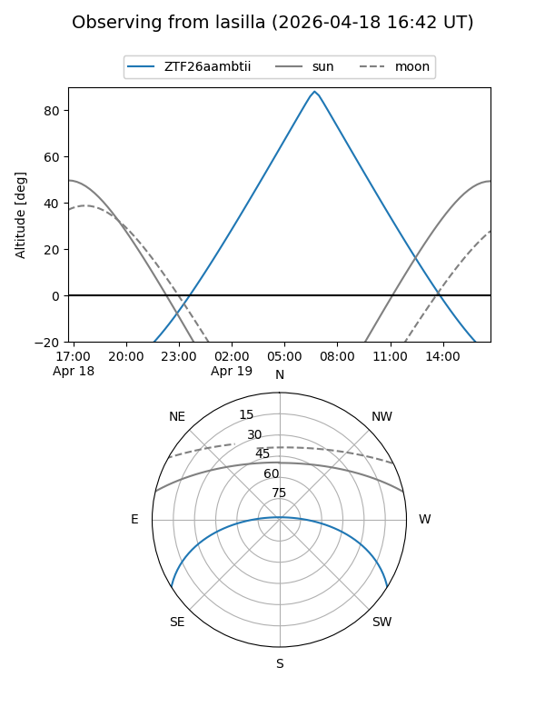
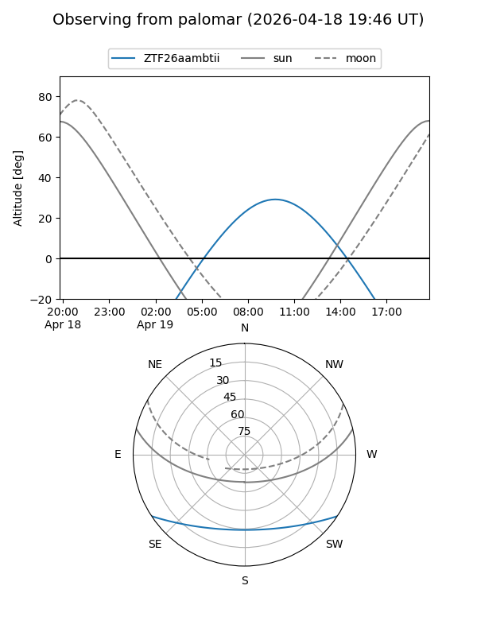

ZTF26aambtii
Target ZTF26aambtii at 2026-04-18 11:57
Aliases and brokers:
FINK: link
Lasair: link
ALeRCE: link
alt names
ZTF26aambtii (ztf,fink_ztf)
Coordinates:
equatorial (ra, dec) = 237.0216,-27.37972
equatorial (HMS+DMS) = 15:48:05.20,-27:22:46.98
galactic (l, b) = (344.4114,+20.93022)
Flags:
Photometry:
last ztfg=18.48
1 ztfg detections
Lightcurve
Visibility


Additional plots